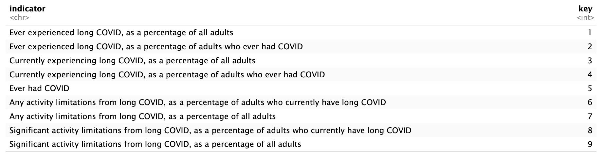
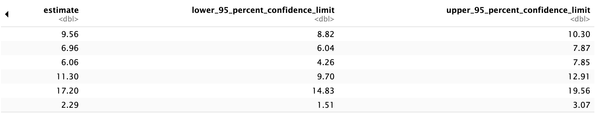
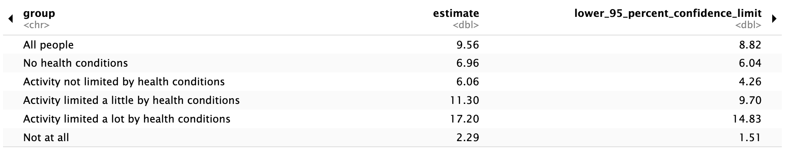
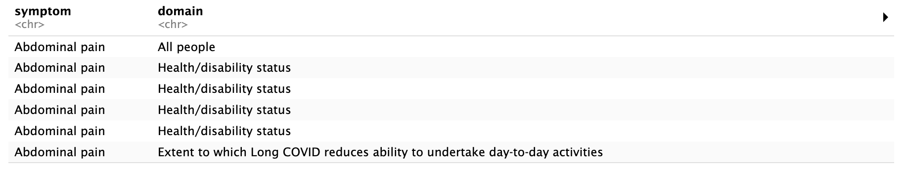
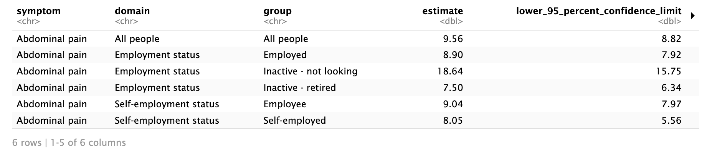
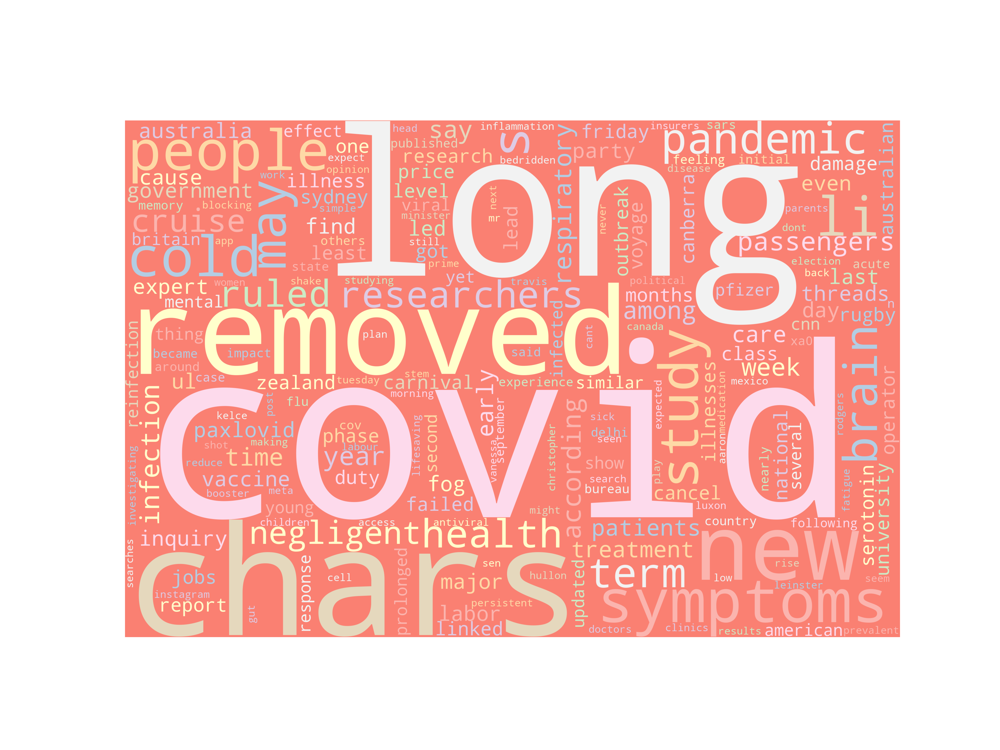

'data.frame': 11376 obs. of 16 variables:
$ indicator : chr "Ever experienced long COVID, as a percentage of all adults" "Ever experienced long COVID, as a percentage of all adults" "Ever experienced long COVID, as a percentage of all adults" "Ever experienced long COVID, as a percentage of all adults" ...
$ group : chr "National Estimate" "By Age" "By Age" "By Age" ...
$ state : chr "United States" "United States" "United States" "United States" ...
$ subgroup : chr "United States" "18 - 29 years" "30 - 39 years" "40 - 49 years" ...
$ phase : num 3.5 3.5 3.5 3.5 3.5 3.5 3.5 3.5 3.5 3.5 ...
$ time_period : int 46 46 46 46 46 46 46 46 46 46 ...
$ time_period_label : chr "Jun 1 - Jun 13, 2022" "Jun 1 - Jun 13, 2022" "Jun 1 - Jun 13, 2022" "Jun 1 - Jun 13, 2022" ...
$ time_period_start_date: chr "2022-06-01" "2022-06-01" "2022-06-01" "2022-06-01" ...
$ time_period_end_date : chr "2022-06-13" "2022-06-13" "2022-06-13" "2022-06-13" ...
$ value : num 14 17.8 15.2 16.9 15.3 10.9 7.1 4.2 10.5 17.3 ...
$ lowci : num 13.5 15.9 14.1 15.7 14.1 9.8 5.9 3.4 9.8 16.5 ...
$ highci : num 14.5 19.8 16.2 18.3 16.7 12 8.5 5.3 11.2 18.1 ...
$ confidence_interval : chr "13.5 - 14.5" "15.9 - 19.8" "14.1 - 16.2" "15.7 - 18.3" ...
$ quartile_range : chr "" "" "" "" ...
$ quartile_number : int NA NA NA NA NA NA NA NA NA NA ...
$ suppression_flag : int NA NA NA NA NA NA NA NA NA NA ...Data Cleaning
CDC - Long Covid:
This data originally comes from survey data sourced by the CDC. Initially, we can obtain the macro’s of the data as follows:
From this description of the data, we can see issues with NA values, data types and string data. In order to clean the data, I did the following. You can find the documented code for this cleaning process below.
Drop columns related to quartiles as they are irrelevant
Create key values that correspond to the unique values of the indicator column since the descriptions of each category are quite long.
Dropped interval columns since the data was mentioned in other columns
Convert start and end data to datetime
Removed “By” in the group values
Remove all rows where the value column was NA, thus eliminating all NA values in the dataset. 12.5% of the original dataset was filtered out.
Code
#Let's drop the last three columns related to quartiles since it is unnessesary.
cdc <- cdc %>%
select(-quartile_range, -quartile_number, -suppression_flag)
#Now, let's check the unique values of indicator to condense the values since they're a little too long
cdc_keys <- cdc %>%
select(indicator) %>%
distinct()
cdc_keys <- cdc_keys %>%
mutate(key = 1:nrow(cdc_keys))
#Since there are 10 unique categories, we'll create a new column with a key, such that the number matches up with a value.
cdc <- cdc %>%
right_join(cdc_keys, by = "indicator")
#We can also eliminate time_period_label and confidence_interval as both values are repeated in other columns
cdc <- cdc %>%
select(-time_period_label, -confidence_interval)
#Now, let's make the time start and time end datetime variables
cdc <- cdc %>%
mutate(time_period_start_date = as.Date(time_period_start_date)) %>%
mutate(time_period_end_date = as.Date(time_period_end_date))
#Let's look at the unique values for the group column and adjust as needed:
cdc <- cdc %>%
mutate(group = str_replace(group, "^By\\s", ""))
#We also need to check for any na values
#cdc %>% summarise_all(~ sum(is.na(.)))
#From this we can say that the columns that have na's are all value and the corresponding lowci and highci. Thus, since the main variable we are tracking is value, we will go ahead and drop all rows where value = NA. Viewing the data, there also appears to be a connection between phace = -1 and the NA values.
cdc <- cdc %>%
filter(!is.na(value))
# cdc %>% summarise_all(~ sum(is.na(.)))
#The data no longer has NA's! We can also see that this decision filtered out 12.5% of the original dataset.
#Lastly, we'll get rid of the indicator column and show the cleaned data:
cdc <- cdc %>%
select(-indicator)
write.csv(cdc, "../../data/01-modified-data/cdc_clean.csv")
As described in step two, I have created a key for the descriptive categories within the dataset. The chart above shows the keys and their respective description.
Long Covid Symptoms - UK:
Amongst the data obtained through the UK survey, I will be focusing on survey data regarding symptoms related to prior health as well as employement status. The raw data would be classified as very messy, with most of the column names unreadable and data types unclear. Thus, I did the following for both datasets in order to clean the data.
Since the formatting of the excel sheet is not in a traditional record format, we’ll need to remove some empty columns. Thus, I removed the first four rows, since they were empty.
Next, we’ll make the top row of the dataframe and make those values the column names.
Using the janitor package in R, we’ll also make the column names “tidy”. This means the names will be lower case without any spaces.
The columns estimate, lower confidence bound, and upper confidence bound need to be datatype double, so we will cats those columns.
Checking for NA values; if there are NA values in the estimate column, this means that that group’s data was not collected in the survey. Thus, we’ll drop those rows and report the loss of data (see code).
Lastly, we’ll save the cleaned datasets into csv files.
Code
library(tidyverse)
library(readxl)
library(janitor)
long_covid_uk_health <- read_excel("../../data/00-raw-data/longcovid_uk.xlsx", sheet = 'Table 3')
long_covid_uk_job <- read_excel("../../data/00-raw-data/longcovid_uk.xlsx", sheet = 'Table 4')
#For Long Covid with regards to Health
#First, we'll remove the first three rows since they're all empty.
long_covid_uk_health <- long_covid_uk_health %>%
filter(!row_number() %in% c(1, 2, 3, 4))
#Next, we'll make top row the column names:
long_covid_uk_health <- long_covid_uk_health %>%
purrr::set_names(as.character(slice(., 1))) %>%
slice(-1)
#Now, we need to name the column names tidy:
long_covid_uk_health <- long_covid_uk_health %>%
clean_names()
#Next, we'll need to change the datatypes of certain columns.
long_covid_uk_health <- long_covid_uk_health %>%
mutate(estimate = as.double(estimate)) %>%
mutate(lower_95_percent_confidence_limit = as.double(lower_95_percent_confidence_limit)) %>%
mutate(upper_95_percent_confidence_limit = as.double(upper_95_percent_confidence_limit))
#Checking for NA values:
long_covid_uk_health %>%
summarise_all(~ sum(is.na(.)))
#No NA values!
#Let's see the cleaned data:
head(long_covid_uk_health)
write.csv(long_covid_uk_health, "../../data/01-modified-data/long_covid_uk_health_clean.csv")
#For Long Covid with regards to Employement Status:
#Now, we'll do the same cleaning for employement status data since it's the same format:
long_covid_uk_job <- long_covid_uk_job %>%
filter(!row_number() %in% c(1, 2, 3, 4))
#Next, we'll make top row the column names:
long_covid_uk_job <- long_covid_uk_job %>%
purrr::set_names(as.character(slice(., 1))) %>%
slice(-1)
#Now, we need to name the column names tidy:
long_covid_uk_job <- long_covid_uk_job %>%
clean_names()
#Next, we'll need to change the datatypes of certain columns.
long_covid_uk_job <- long_covid_uk_job %>%
mutate(estimate = as.double(estimate)) %>%
mutate(lower_95_percent_confidence_limit = as.double(lower_95_percent_confidence_limit)) %>%
mutate(upper_95_percent_confidence_limit = as.double(upper_95_percent_confidence_limit))
#Checking for NA values:
long_covid_uk_job %>%
summarise_all(~ sum(is.na(.)))
#There are a significant number of NA values for estimate and the confidence intervals.
#Since these are for specific groups, the NA's mean that data was not collected for these groups.
#Since we can't use "other" groups to estimate this data, we will drop these rows.
#This results is a loss of 13% of the original dataset.
long_covid_uk_job <- long_covid_uk_job %>%
filter(!is.na(estimate))
head(long_covid_uk_job)
write.csv(long_covid_uk_job, "../../data/01-modified-data/long_covid_uk_job_clean.csv")



Long Covid News:
I used the NewsAPI to collect current news information surrounding long covid. Since the data came from an API, there isn’t too much cleaning needed to be done. For now, we’ll visualize word frequency amongst titles of news articles.
Code
news = pd.read_csv('../../data/00-raw-data/long_covid_news_raw.csv')
text = news['title'].tolist()
text.append(news['content'].tolist())
text = ' '.join([str(elem) for elem in text])
# #FILTER OUT UNWANTED CHARACTERS
new_text=""
for character in text:
if character in string.printable:
new_text+=character
text=new_text
# #FILTER OUT UNWANTED WORDS
new_text=""
for word in nltk.tokenize.word_tokenize(text):
if word not in nltk.corpus.stopwords.words('english'):
if word in [".",",","!","?",":",";"]:
#remove the last space
new_text=new_text[0:-1]+word+" "
else: #add a space
new_text+=word.lower()+" "
text=new_text
def generate_word_cloud(my_text):
from wordcloud import WordCloud, STOPWORDS
import matplotlib.pyplot as plt
# exit()
# Import package
# Define a function to plot word cloud
def plot_cloud(wordcloud):
# Set figure size
plt.figure(figsize=(40, 30))
# Display image
plt.imshow(wordcloud)
# No axis details
plt.axis("off");
# Generate word cloud
wordcloud = WordCloud(
width = 3000,
height = 2000,
random_state=1,
background_color='salmon',
colormap='Pastel1',
collocations=False,
stopwords = STOPWORDS).generate(my_text)
plot_cloud(wordcloud)
plt.show()
generate_word_cloud(text)
After cleaning the data containing the title and content for each news report, I created a wordcloud displaying the cleaned text frequencies. As we can see, words relating to boosters, symptoms, and overall health are the most frequent after long covid. Further analysis will be needed in order to showcase sentiment within the news surrounding long covid as well as topics for symptoms, if they are reported.
Presidential Address:
The raw data of the president’s address in stored in a text file. Thus, we’ll clean the text data and visualize frequencies of words. Later on, we will also conduct sentiment analysis on the data.
Code
my_file = open('../../data/00-raw-data/white_house_statement_raw.txt', "r")
# reading the file
data = my_file.read()
# replacing end of line('/n') with ' ' and
# splitting the text it further when '.' is seen.
wh_text = data.replace('\n', ' ')
new_text=""
for character in wh_text:
if character in string.printable:
new_text+=character
wh_text=new_text
# #FILTER OUT UNWANTED WORDS
new_text=""
for word in nltk.tokenize.word_tokenize(wh_text):
if word not in nltk.corpus.stopwords.words('english'):
if word in [".",",","!","?",":",";","(",")","()"]:
#remove the last space
new_text=new_text[0:-1]+word+" "
else: #add a space
new_text+=word.lower()+" "
wh_text=new_text
generate_word_cloud(wh_text)After cleaning the text data from President Biden’s address, we can see that rather than addressing symptoms, the white house address made the point to focus on public health, with words like communites, support, and research being some of the most common words after long covid. Further analysis on sentiment as well as additional government addresses may be needed to understand the position of the US government on long covid.